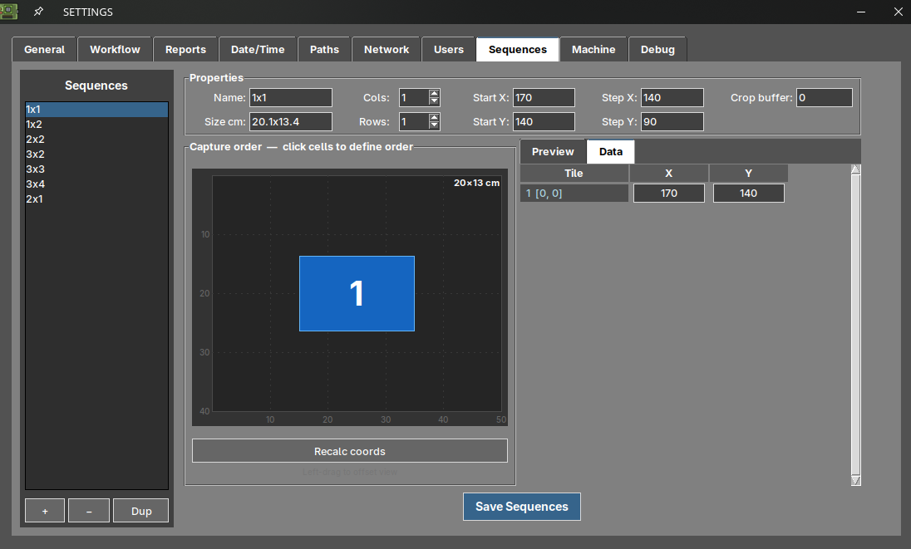
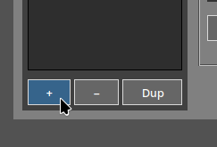
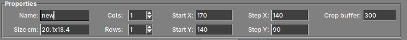
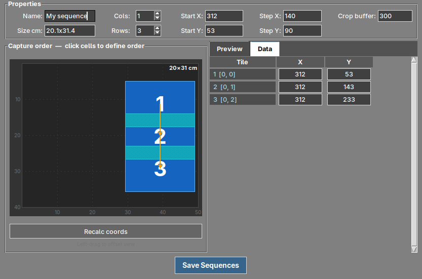
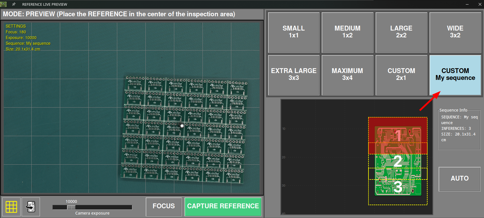

Benutzerdefinierte Aufnahmesequenzen
Was ist eine Aufnahmesequenz?
Die AOI fotografiert die gesamte Platine nicht in einer einzigen Aufnahme. Die Kamera bewegt sich über den Inspektionsbereich und macht ein Raster von Fotos, das die Software anschließend zu einem einzigen Bild zusammenfügt. Dieses Raster wird als Sequenz bezeichnet.
Die Software enthält eine Reihe vordefinierter Sequenzen, die die gängigsten Platinengrößen abdecken:
| Sequenz | Raster | Aufnahmen |
|---|---|---|
| SMALL | 1x1 | 1 |
| MEDIUM | 1x2 | 2 |
| LARGE | 2x2 | 4 |
| WIDE | 3x2 | 6 |
| EXTRA LARGE | 3x3 | 9 |
| MAXIMUM | 3x4 | 12 |
Mit einer benutzerdefinierten Sequenz können Sie ein eigenes Raster festlegen, wenn keine der vordefinierten Sequenzen zu Ihrer Platine passt.
Wann benötigen Sie eine?
Eine benutzerdefinierte Sequenz lohnt sich, wenn:
- Ihre Platine eine Form hat, die zu keinem der vordefinierten Raster passt, typischerweise lange, schmale Platten.
- Die kleinste vordefinierte Sequenz, die Ihre Platine abdeckt, auch einen großen leeren Bereich um sie herum abdeckt, sodass die AOI Bereiche ohne Platine fotografiert.
- Sie dasselbe Produkt wiederholt prüfen und das Aufnahmeraster möglichst genau darauf abstimmen möchten.
Jede Aufnahme des Rasters wird separat verarbeitet, und das Live-Vorschaufenster zeigt an, wie viele Inferenzen die ausgewählte Sequenz durchführt. Ein an die Platine angepasstes Raster vermeidet unnötige Aufnahmen.
Wo Sie sie finden
Öffnen Sie das Einstellungsmenü und wechseln Sie zur Registerkarte Sequences.

Hinweis
Diese Registerkarte steht nur Benutzern mit der Rolle admin zur Verfügung.
Die Parameter
| Feld | Beschreibung |
|---|---|
| Name | Name der Sequenz. Dies ist der Name, der später im Live-Vorschaufenster angezeigt wird. |
| Size cm | Von der Sequenz abgedeckter Platinenbereich. Er wird automatisch aus den übrigen Werten berechnet, sodass Sie damit prüfen können, ob das Raster Ihre Platine tatsächlich abdeckt. |
| Cols / Rows | Anzahl der Spalten und Zeilen des Rasters, von 1 bis 8. |
| Start X / Start Y | Position der ersten Aufnahme, angegeben in Motorschritten der Plattform. |
| Step X / Step Y | Strecke, die die Kamera zwischen zwei Aufnahmen zurücklegt, ebenfalls in Motorschritten. |
| Crop buffer | Überlappung zwischen benachbarten Aufnahmen, in Pixeln. |
Zum Crop Buffer
Benachbarte Aufnahmen müssen sich leicht überlappen, damit die Software sie zusammenfügen kann. Ist die Überlappung zu gering, können die Nähte zwischen den Aufnahmen sichtbar werden; ist sie zu groß, fotografieren Sie denselben Bereich zweimal, ohne dass dies einen Vorteil bringt.
Eine benutzerdefinierte Sequenz erstellen
1. Sequenz hinzufügen
Drücken Sie die Schaltfläche + unterhalb der Sequenzliste, um eine neue Sequenz zu erstellen.

Die Schaltfläche − löscht die in der Liste ausgewählte Sequenz, und Dup dupliziert sie. Eine vordefinierte Sequenz zu duplizieren, die Ihren Anforderungen bereits nahekommt, ist in der Regel schneller, als bei null anzufangen.
2. Benennen und Raster festlegen
Geben Sie der Sequenz einen aussagekräftigen Namen — nach diesem suchen Sie später in der Live-Vorschau — und legen Sie die Anzahl der Spalten und Zeilen fest, die Ihre Platine benötigt.

Das Feld Size cm aktualisiert sich automatisch, während Sie die Werte ändern, sodass Sie prüfen können, ob der resultierende Bereich Ihre Platine abdeckt.
3. Raster positionieren und Aufnahmereihenfolge festlegen
Legen Sie mit Start X und Start Y die Position der ersten Aufnahme fest und mit Step X und Step Y, wie weit sich die Kamera zwischen den Aufnahmen bewegt. Drücken Sie anschließend Recalc coords, um die Position jeder Aufnahme anhand dieser Werte neu zu berechnen.
Die Zeichenfläche zeigt das resultierende Raster maßstabsgetreu an. Klicken Sie auf die Zellen in der Reihenfolge, in der sie fotografiert werden sollen, um die Aufnahmereihenfolge festzulegen.

Im obigen Beispiel wird ein hohes, schmales Panel mit 1 Spalte und 3 Zeilen abgedeckt. Die erste Aufnahme liegt bei X 312, Y 53, und mit einem Step Y von 90 liegen die folgenden Aufnahmen bei Y 143 und Y 233. Die Registerkarte Data listet die Koordinaten jeder Aufnahme auf und erlaubt es, sie einzeln zu bearbeiten, falls Sie eine bestimmte Position feinabstimmen müssen.
Sie können auch mit linker Maustaste klicken und ziehen, um die Ansicht auf der Zeichenfläche zu verschieben, und mit rechter Maustaste klicken und ziehen, um die Überlappungszone visuell anzupassen.
4. Ergebnis prüfen
Wählen Sie eine Aufnahme aus und öffnen Sie die Registerkarte Preview, um das Live-Kamerabild an genau dieser Position zu sehen. Dies ist der schnellste Weg, um vor dem Speichern zu bestätigen, dass das Raster Ihre Platine wirklich abdeckt.
Hinweis
Für die Vorschau muss die Plattform verbunden sein, da sich die Kamera physisch zur ausgewählten Position bewegt.
5. Speichern
Drücken Sie Save Sequences. Die Konfiguration wird in der Datei sequences.json Ihrer Einheit gespeichert.
Ihre Sequenz verwenden
Nach dem Speichern erscheint Ihre Sequenz als Option CUSTOM im Live-Vorschaufenster, sowohl bei der Aufnahme eines REFERENZ-Bildes als auch beim Start einer Inspektion.

Bei der Auswahl wird das Panel Sequence Info mit dem Namen der Sequenz, der Anzahl der durchgeführten Inferenzen und dem abgedeckten Bereich angezeigt.